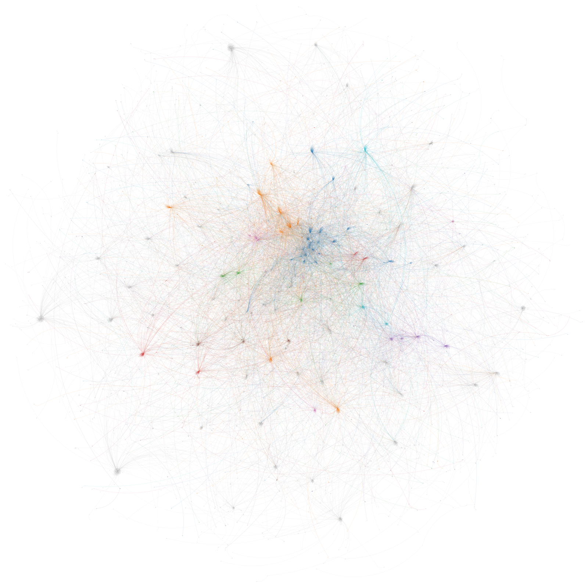

Mạng tương tác của cộng đồng khoa học tiếng Anh trên Bluesky
Đồ án dựng đồ thị có hướng từ các lượt trả lời, trích dẫn, nhắc tên và đăng lại giữa người dùng Bluesky viết tiếng Anh về khoa học và học thuật, đo cấu trúc mạng, rồi xây ứng dụng gợi ý tài khoản nên theo dõi và đo độ bền của mạng khi mất các tài khoản trung tâm.
Số liệu chụp ngày 21/11/2026, tính bằng script analyze_network.py (đường kính và betweenness tính đầy đủ, không dùng mẫu).
01Đặt vấn đề
Bluesky là mạng xã hội phi tập trung chạy trên giao thức AT Protocol. Dữ liệu công khai đọc được qua API mở, nên có thể thu thập hợp lệ bằng tài khoản và App Password của chính người làm bài. Cộng đồng khoa học và học thuật là một trong những nhóm chuyển sang Bluesky sớm và đông, nên phù hợp để nghiên cứu cấu trúc tương tác.
Bài tập yêu cầu thu thập tối thiểu 20.000 bản ghi từ một nguồn, làm sạch, dựng đồ thị, tính các độ đo của phân tích mạng xã hội, chọn một thuật toán để áp dụng, trực quan hóa và xây ứng dụng minh họa.
- Ai là người được nhiều người khác tương tác tới, và ai chủ động tương tác nhiều nhất?
- Mạng có tách thành các cộng đồng rõ ràng không?
- Mạng có vài nút rất lớn và đa số nút nhỏ, như các mạng xã hội thường thấy không?
- Từ lịch sử tương tác, có gợi ý được tài khoản mà một người sẽ tương tác tiếp không?
- Mạng chịu được việc mất các tài khoản trung tâm đến mức nào?
Hai câu hỏi cuối là lý do của ứng dụng: gợi ý kết nối giúp người dùng tìm đúng người trong cộng đồng, còn phép thử độ bền cho biết cộng đồng phụ thuộc vào một số ít tài khoản đến đâu.
02Mục tiêu và câu hỏi nghiên cứu
Mục tiêu: mô tả cấu trúc mạng tương tác của cộng đồng khoa học tiếng Anh trên Bluesky bằng các độ đo chuẩn, và xây ứng dụng gợi ý tài khoản nên theo dõi, kèm phép thử độ bền của mạng.
Những tài khoản nào giữ vai trò trung tâm (degree, betweenness, closeness, eigenvector, PageRank, HITS)?
có kết quảMạng có cấu trúc cộng đồng không, đo bằng Louvain và modularity?
có kết quảPhân bố bậc có đuôi nặng (một ít nút rất lớn, nhiều nút rất nhỏ) không?
có kết quảDựa vào tương tác đã có và cộng đồng, gợi ý có đoán trúng tài khoản mà người dùng tương tác tiếp tốt hơn việc gợi ý tài khoản phổ biến không?
có kết quảKhi gỡ dần các tài khoản trung tâm, thành phần liên thông lớn nhất của mạng thu nhỏ nhanh đến đâu so với gỡ ngẫu nhiên?
có kết quảPhạm vi: các bài có nhãn ngôn ngữ en thuộc chủ đề khoa học và học thuật (tìm theo từ khóa như research, paper, science, PhD, preprint), thời gian đăng từ 08/2024 đến 11/2026 (phần lớn là 11/2026). Không xét nội dung văn bản, chỉ xét cấu trúc tương tác.
03Dữ liệu và đồ thị
Nguồn và cách thu thập
- Tìm bài bằng
searchPostsvớilang=en, duyệt theo từng ngày (14 ngày gần nhất) và 30 từ khóa khoa học, học thuật. - Mở rộng theo seed bằng
getAuthorFeed: lấy toàn bộ bài và lượt đăng lại của các tài khoản trung tâm (214 tài khoản đến khi đủ mục tiêu 80.000 bài). - Tất cả đều là dữ liệu công khai. Trang này chỉ hiển thị mã ẩn danh
U00xxx, không hiển thị tên tài khoản.
Đồ thị
- Nút: một tài khoản Bluesky.
- Cạnh có hướng: A trỏ tới B khi A trả lời, trích dẫn, nhắc tên hoặc đăng lại bài của B.
- Trọng số: số lần tương tác, giữ riêng theo từng loại (reply, quote, mention, repost).
Kết quả làm sạch
| Bước | Nội dung | Trước | Sau |
|---|---|---|---|
| 1 | Xóa trùng, loại dòng thiếu trường, chuẩn hóa thời gian UTC | 80.043 | 80.043 |
| 2.1–2.2 | Giữ bài có nhãn en, loại bài rỗng hoặc dưới 1 từ | 80.043 | 76.973 |
| 3 | Bot/spam: 33 tài khoản bị gắn cờ (hơn 100 bài mỗi ngày hoạt động), chỉ báo cáo, chưa loại | 76.973 | 76.973 |
| 5 | Dựng cạnh, gộp trọng số theo cặp nguồn–đích (lượt tương tác → cạnh) | 47.809 | 25.580 |
| 6.1–6.2 | Bỏ self-loop (cạnh 25.580 → 22.437), bỏ nút cô lập (nút 31.524 → 21.707) | 25.580 | 22.437 |
| 6.3 | Giữ thành phần liên thông lớn nhất (nút / cạnh) | 21.707 / 22.437 | 13.815 / 17.828 |
04Phương pháp
- Thu thập. Script Python gọi trực tiếp API Bluesky (module
bsky_lite.py, chỉ dùng thư viện chuẩn), ghi nối vàoposts.jsonlvàreposts.jsonl. - Làm sạch.
clean_build_graph.pychạy 7 bước, không sửa dữ liệu thô, xuất bảng nút, bảng cạnh và GraphML. - Độ đo toàn mạng. Tám chỉ số mô tả hình dạng chung của mạng. Bấm vào nút bên dưới để xem giải thích từng chỉ số, kèm giá trị đo được trên thành phần liên thông lớn nhất.
Giải thích từng độ đo8 chỉ số
- Mật độ
- Tỷ lệ số kết nối có thật so với số kết nối tối đa có thể có giữa các tài khoản. Nằm từ 0 đến 1; càng gần 0 thì mạng càng thưa, mỗi người chỉ tương tác với rất ít người.0,000093: mạng rất thưa, đa số hai tài khoản bất kỳ không tương tác với nhau.
- Tương hỗ (reciprocity)
- Trong các tương tác có chiều (A tới B), tỷ lệ cặp mà B cũng tương tác lại A. Cho biết tương tác là trao đổi hai chiều hay chỉ một chiều.0,031: phần lớn là một chiều, ví dụ đăng lại bài hoặc trả lời một tài khoản nổi bật.
- Hệ số phân cụm
- Bạn của bạn có là bạn của nhau không: tỷ lệ các bộ ba tài khoản khép kín thành hình tam giác. Từ 0 đến 1; cao nghĩa là các nhóm kết nối chặt với nhau.0,023: thấp, ít nhóm nhỏ kết chặt, tương tác trải rộng hơn là khép kín.
- Assortativity theo bậc
- Tài khoản có nhiều kết nối thường nối với tài khoản cũng nhiều kết nối (giá trị dương) hay với tài khoản ít kết nối (giá trị âm). Từ −1 đến 1.−0,21: âm, các nút lớn chủ yếu nối với rất nhiều nút nhỏ, tạo dạng hình sao.
- Đường kính
- Quãng đường dài nhất, tính bằng số bước, giữa hai tài khoản bất kỳ trong cùng một thành phần liên thông. Tính trên bản bỏ qua chiều của cạnh.16 bước: hai tài khoản xa nhau nhất phải qua 16 bước.
- Độ dài đường đi trung bình
- Số bước trung bình để đi từ một tài khoản tới một tài khoản khác. Cho biết thông tin lan trong mạng nhanh hay chậm.5,01 bước: trung bình mất khoảng 5 bước, gần với “sáu bậc xa cách”.
- Phân bố bậc
- Với mỗi giá trị bậc (số kết nối của một tài khoản), có bao nhiêu tài khoản mang giá trị đó. Mạng xã hội thường có rất nhiều nút nhỏ và ít nút rất lớn.75% tài khoản chỉ có 1 kết nối, trong khi nút lớn nhất có 318.
- Kiểm định power-law bằng bootstrap
- Power-law là mô hình toán cho “đuôi nặng”: số tài khoản giảm theo lũy thừa khi bậc tăng. Cách kiểm: khớp mô hình vào dữ liệu thật, sinh 100 bộ dữ liệu giả đúng theo mô hình, rồi đếm bao nhiêu bộ giả lệch khỏi mô hình nhiều bằng dữ liệu thật. Tỷ lệ đó là p-value; p càng nhỏ thì dữ liệu thật càng không giống power-law.p = 0,00: không có bộ giả nào lệch nhiều như dữ liệu thật, nên phân bố bậc không phải power-law thuần dù đuôi vẫn nặng.
- Centrality. Degree, closeness, betweenness, eigenvector, PageRank, kèm HITS (hub và authority) cho đồ thị có hướng.
- Thuật toán áp dụng. Louvain tìm cộng đồng, đánh giá bằng modularity, chạy trên bản vô hướng của thành phần liên thông lớn nhất.
- Trực quan hóa. Gephi (ForceAtlas2, tô màu theo cộng đồng, cỡ nút theo centrality) và NetworkX.
- Ứng dụng. Gợi ý tài khoản nên theo dõi, đánh giá bằng giấu cạnh, và phép thử độ bền của mạng; giao diện Streamlit (chi tiết bên dưới).
Mã nguồn các bước
Bấm vào từng mục để xem giải thích và toàn bộ mã nguồn. Script không chứa mật khẩu: thông tin đăng nhập đọc từ biến môi trường.
Script crawlcrawl_bluesky.py · crawl_seed.py · bsky_lite.py
- crawl_bluesky.py tìm bài bằng
searchPostsvớilang=en(đổi bằng--lang), duyệt theo từng ngày và từng từ khóa (mặc định 30 từ khoa học, ghi đè bằng--queries). Hàmparse_postrút ra tác giả, nội dung, thời gian, bài được reply, bài được quote, tài khoản được nhắc tên và số lượt tương tác. - crawl_seed.py xếp hạng tài khoản theo số bài đã đăng cộng số lần được người khác tương tác tới, rồi lấy toàn bộ bài và lượt đăng lại của các tài khoản đó bằng
getAuthorFeed. Lượt repost ghi riêng vàoreposts.jsonl. - bsky_lite.py là client tối giản gọi thẳng API HTTP của Bluesky, thay cho thư viện
atproto(thư viện này cần một DLL bị chính sách bảo mật của Windows chặn trên máy làm bài). - Ghi nối vào file JSONL. Đăng nhập bằng App Password qua biến
BSKY_HANDLEvàBSKY_APP_PASSWORD; mật khẩu không nằm trong mã.
Cách chạy: python crawl_seed.py --lang en --top 3000 --target 80000 --max-pages 3
crawl_bluesky.py189 dòng#!/usr/bin/env python3
"""
Crawl bài đăng theo ngôn ngữ (mặc định langs chứa 'en') từ Bluesky bằng AT Protocol.
Giai đoạn 2 của kế hoạch bài tập cá nhân SNA.
Cài đặt: không cần thư viện ngoài (dùng bsky_lite.py)
Đăng nhập: tạo App Password tại Bluesky > Settings > Privacy and security > App passwords
set BSKY_HANDLE=ten.bsky.social
set BSKY_APP_PASSWORD=xxxx-xxxx-xxxx-xxxx (Windows cmd)
Chạy: python crawl_bluesky.py --lang en --days 14 --target 30000
Đầu ra (data_en/raw/posts.jsonl): mỗi dòng 1 bài đăng, dùng để dựng cạnh:
- reply : author -> tác giả của reply_parent_uri
- quote : author -> tác giả của quote_uri
- mention : author -> mention_dids
Có thể dừng (Ctrl+C) và chạy lại, script tự bỏ qua bài đã có.
"""
import argparse
import json
import os
import sys
import time
from datetime import datetime, timedelta, timezone
from bsky_lite import Client
# Từ khóa để search (searchPosts bắt buộc có từ khóa q)
QUERIES = [ # mặc định: chủ đề khoa học/học thuật tiếng Anh; ghi đè bằng --queries "a,b,c" hoặc --queries-file
"research", "paper", "study", "science", "scientists", "journal", "preprint", "university",
"PhD", "academic", "data", "climate", "biology", "physics", "neuroscience", "machine learning",
"AI", "statistics", "medicine", "ecology", "chemistry", "astronomy", "peer review", "grant",
"postdoc", "lab", "publication", "open access", "dataset", "model",
]
def to_dict(obj):
if obj is None:
return {}
if isinstance(obj, dict):
return obj
if hasattr(obj, "model_dump"):
return obj.model_dump(by_alias=True)
return {}
def did_from_uri(uri):
# at://did:plc:xxxx/app.bsky.feed.post/rkey
if uri and uri.startswith("at://"):
return uri[5:].split("/")[0]
return None
def parse_post(p):
rec = to_dict(p.record)
reply = rec.get("reply") or {}
parent_uri = (reply.get("parent") or {}).get("uri")
root_uri = (reply.get("root") or {}).get("uri")
mentions = []
for facet in rec.get("facets") or []:
for feat in facet.get("features") or []:
t = feat.get("$type") or feat.get("py_type") or ""
if t.endswith("#mention") and feat.get("did"):
mentions.append(feat["did"])
quote_uri = None
emb = rec.get("embed") or {}
t = emb.get("$type") or emb.get("py_type") or ""
if t == "app.bsky.embed.record":
quote_uri = (emb.get("record") or {}).get("uri")
elif t == "app.bsky.embed.recordWithMedia":
quote_uri = ((emb.get("record") or {}).get("record") or {}).get("uri")
return {
"uri": p.uri,
"author_did": p.author.did,
"author_handle": p.author.handle,
"created_at": rec.get("createdAt") or rec.get("created_at"),
"text": rec.get("text", ""),
"langs": rec.get("langs") or [],
"reply_parent_uri": parent_uri,
"reply_parent_did": did_from_uri(parent_uri),
"reply_root_uri": root_uri,
"quote_uri": quote_uri,
"quote_did": did_from_uri(quote_uri),
"mention_dids": sorted(set(mentions)),
"like_count": p.like_count or 0,
"repost_count": p.repost_count or 0,
"reply_count": p.reply_count or 0,
"quote_count": getattr(p, "quote_count", 0) or 0,
}
def load_seen(path):
seen = set()
if os.path.exists(path):
with open(path, encoding="utf-8") as f:
for line in f:
try:
seen.add(json.loads(line)["uri"])
except Exception:
pass
return seen
def search_page(client, q, since, until, cursor, lang="en"):
params = {
"q": q, "lang": lang, "limit": 100, "sort": "latest",
"since": since, "until": until,
}
if cursor:
params["cursor"] = cursor
for attempt in range(6):
try:
return client.app.bsky.feed.search_posts(params=params)
except Exception as e: # rate limit / lỗi mạng -> chờ rồi thử lại
wait = 5 * (2 ** attempt)
print(f" ! lỗi: {e} -> chờ {wait}s", file=sys.stderr)
time.sleep(wait)
return None
def main():
ap = argparse.ArgumentParser()
ap.add_argument("--days", type=int, default=30, help="số ngày lùi về quá khứ")
ap.add_argument("--target", type=int, default=30000, help="số bài cần thu thập")
ap.add_argument("--max-pages", type=int, default=30, help="số trang tối đa mỗi (ngày, từ khóa)")
ap.add_argument("--out", default="data_en/raw")
ap.add_argument("--lang", default="en", help="mã ngôn ngữ của bài (en, vi, ...)")
ap.add_argument("--queries", default="", help="từ khóa, cách nhau bằng dấu phẩy (mặc định dùng QUERIES)")
ap.add_argument("--queries-file", default="", help="file mỗi dòng một từ khóa")
args = ap.parse_args()
queries = QUERIES
if args.queries_file:
queries = [l.strip() for l in open(args.queries_file, encoding="utf-8") if l.strip()]
elif args.queries:
queries = [q.strip() for q in args.queries.split(",") if q.strip()]
handle = os.environ.get("BSKY_HANDLE")
pw = os.environ.get("BSKY_APP_PASSWORD")
if not handle or not pw:
sys.exit("Thiếu biến môi trường BSKY_HANDLE / BSKY_APP_PASSWORD")
client = Client()
client.login(handle, pw)
os.makedirs(args.out, exist_ok=True)
out_path = os.path.join(args.out, "posts.jsonl")
seen = load_seen(out_path)
total = len(seen)
print(f"Đã có sẵn {total} bài. Mục tiêu {args.target}.")
today = datetime.now(timezone.utc).replace(hour=0, minute=0, second=0, microsecond=0)
with open(out_path, "a", encoding="utf-8") as f:
for d in range(args.days):
day_end = today - timedelta(days=d)
day_start = day_end - timedelta(days=1)
since, until = day_start.isoformat(), day_end.isoformat()
for q in queries:
cursor = None
for _ in range(args.max_pages):
res = search_page(client, q, since, until, cursor, args.lang)
if res is None or not res.posts:
break
for p in res.posts:
if p.uri in seen:
continue
row = parse_post(p)
if args.lang not in row["langs"]:
continue
seen.add(p.uri)
f.write(json.dumps(row, ensure_ascii=False) + "\n")
total += 1
f.flush()
cursor = res.cursor
if not cursor or total >= args.target:
break
time.sleep(0.3)
print(f" [{day_start.date()}] '{q}' -> tổng {total} bài", flush=True)
if total >= args.target:
break
print(f"{day_start.date()} -> tổng {total} bài")
if total >= args.target:
break
print(f"Xong: {total} bài tại {out_path}")
if __name__ == "__main__":
main()crawl_seed.py152 dòng#!/usr/bin/env python3
"""
Mở rộng dữ liệu theo tài khoản seed (bước 2 của kế hoạch thu thập).
Đọc data_en/raw/posts.jsonl -> chọn tài khoản tích cực nhất -> lấy toàn bộ
bài đăng (kèm reply) của họ qua getAuthorFeed -> ghi nối vào cùng posts.jsonl.
Đồng thời ghi các lượt repost của seed vào data_en/raw/reposts.jsonl (cạnh repost).
Dùng chung đăng nhập với crawl_bluesky.py (BSKY_HANDLE, BSKY_APP_PASSWORD).
Để file này cùng thư mục với crawl_bluesky.py.
Chạy: python crawl_seed.py --top 1500 --target 30000
Có thể Ctrl+C và chạy lại: bỏ qua bài đã có và seed đã xử lý (data_en/raw/seeds_done.txt).
"""
import argparse
import json
import os
import sys
import time
from collections import Counter
from bsky_lite import Client
from crawl_bluesky import parse_post, load_seen
def load_rows(path):
rows = []
with open(path, encoding="utf-8") as f:
for line in f:
try:
rows.append(json.loads(line))
except Exception:
pass
return rows
def rank_seeds(rows, top):
"""Điểm = số bài đã đăng + số lần được reply/quote/mention tới (tài khoản 'trung tâm')."""
score = Counter()
handle = {}
for r in rows:
score[r["author_did"]] += 1
handle[r["author_did"]] = r["author_handle"]
for k in ("reply_parent_did", "quote_did"):
if r.get(k):
score[r[k]] += 1
for d in r.get("mention_dids") or []:
score[d] += 1
return [(d, handle.get(d, d)) for d, _ in score.most_common(top)]
def get_feed(client, did, cursor):
params = {"actor": did, "limit": 100, "filter": "posts_with_replies"}
if cursor:
params["cursor"] = cursor
for attempt in range(6):
try:
return client.app.bsky.feed.get_author_feed(params=params)
except Exception as e:
msg = str(e)
# tài khoản bị chặn/xóa/khóa -> bỏ qua, không thử lại
if any(s in msg for s in ("BlockedActor", "BlockedByActor", "AccountDeactivated",
"AccountTakedown", "Profile not found", "InvalidRequest")):
return None
wait = 5 * (2 ** attempt)
print(f" ! lỗi: {msg[:120]} -> chờ {wait}s", file=sys.stderr)
time.sleep(wait)
return None
def main():
ap = argparse.ArgumentParser()
ap.add_argument("--top", type=int, default=1500, help="số tài khoản seed")
ap.add_argument("--target", type=int, default=30000, help="dừng khi đủ số bài")
ap.add_argument("--max-pages", type=int, default=10, help="số trang tối đa mỗi seed (100 bài/trang)")
ap.add_argument("--out", default="data_en/raw")
ap.add_argument("--lang", default="en", help="mã ngôn ngữ của bài")
args = ap.parse_args()
handle = os.environ.get("BSKY_HANDLE")
pw = os.environ.get("BSKY_APP_PASSWORD")
if not handle or not pw:
sys.exit("Thiếu biến môi trường BSKY_HANDLE / BSKY_APP_PASSWORD")
posts_path = os.path.join(args.out, "posts.jsonl")
reposts_path = os.path.join(args.out, "reposts.jsonl")
done_path = os.path.join(args.out, "seeds_done.txt")
if not os.path.exists(posts_path):
sys.exit("Chưa có posts.jsonl - hãy chạy crawl_bluesky.py trước.")
rows = load_rows(posts_path)
seen = load_seen(posts_path)
total = len(seen)
done = set()
if os.path.exists(done_path):
with open(done_path, encoding="utf-8") as f:
done = {l.strip() for l in f if l.strip()}
seeds = [(d, h) for d, h in rank_seeds(rows, args.top) if d not in done]
print(f"Hiện có {total} bài. {len(seeds)} seed chưa xử lý. Mục tiêu {args.target}.")
client = Client()
client.login(handle, pw)
with open(posts_path, "a", encoding="utf-8") as fp, \
open(reposts_path, "a", encoding="utf-8") as fr, \
open(done_path, "a", encoding="utf-8") as fd:
for i, (did, h) in enumerate(seeds, 1):
added = 0
cursor = None
for _ in range(args.max_pages):
res = get_feed(client, did, cursor)
if res is None or not res.feed:
break
for item in res.feed:
p = item.post
reason = getattr(item, "reason", None)
rtype = (getattr(reason, "py_type", "") or getattr(reason, "$type", "") or "") if reason else ""
if rtype.endswith("reasonRepost"):
# seed repost bài của người khác -> cạnh repost
fr.write(json.dumps({
"reposter_did": did,
"target_uri": p.uri,
"target_did": p.author.did,
"indexed_at": getattr(reason, "indexed_at", None),
}, ensure_ascii=False) + "\n")
continue
if p.uri in seen or p.author.did != did:
continue
row = parse_post(p)
if args.lang not in row["langs"]:
continue
seen.add(p.uri)
fp.write(json.dumps(row, ensure_ascii=False) + "\n")
total += 1
added += 1
fp.flush()
fr.flush()
cursor = res.cursor
if not cursor or total >= args.target:
break
time.sleep(0.2)
fd.write(did + "\n")
fd.flush()
if i % 20 == 0 or added:
print(f"[{i}/{len(seeds)}] @{h}: +{added} -> tổng {total} bài")
if total >= args.target:
break
print(f"Xong: {total} bài tại {posts_path}")
if __name__ == "__main__":
main()bsky_lite.py78 dòng"""Client Bluesky tối giản (chỉ thư viện chuẩn, không cần atproto/libipld).
Cung cấp client.login(), client.app.bsky.feed.search_posts(params=...), get_author_feed(params=...)."""
import json
import re
import urllib.error
import urllib.parse
import urllib.request
HOST = "https://bsky.social/xrpc/"
def _camel(s):
return re.sub(r"_([a-z])", lambda m: m.group(1).upper(), s)
class Obj:
"""Bọc dict JSON để truy cập kiểu thuộc tính; thiếu khóa -> None; 'record' giữ nguyên dict."""
def __init__(self, d):
self._d = d
def __getattr__(self, name):
if name.startswith("__"):
raise AttributeError(name)
if name == "py_type":
return self._d.get("$type")
v = self._d.get(name, self._d.get(_camel(name)))
if name == "record":
return v
return _wrap(v)
def _wrap(v):
if isinstance(v, dict):
return Obj(v)
if isinstance(v, list):
return [_wrap(x) for x in v]
return v
class _NS:
def __init__(self, **kw):
self.__dict__.update(kw)
class Client:
def __init__(self):
self.jwt = self.refresh = self.handle = self.pw = None
self.app = _NS(bsky=_NS(feed=_NS(
search_posts=lambda params: self._get("app.bsky.feed.searchPosts", params),
get_author_feed=lambda params: self._get("app.bsky.feed.getAuthorFeed", params))))
def _req(self, req):
try:
with urllib.request.urlopen(req, timeout=60) as r:
return json.loads(r.read().decode("utf-8"))
except urllib.error.HTTPError as e:
body = e.read().decode("utf-8", "ignore")
raise RuntimeError(f"HTTP {e.code} {body[:200]}")
def login(self, handle, pw):
self.handle, self.pw = handle, pw
data = json.dumps({"identifier": handle, "password": pw}).encode()
req = urllib.request.Request(HOST + "com.atproto.server.createSession", data=data,
headers={"Content-Type": "application/json"})
d = self._req(req)
self.jwt, self.refresh = d["accessJwt"], d["refreshJwt"]
def _get(self, method, params, retry=True):
q = urllib.parse.urlencode({k: v for k, v in params.items() if v is not None})
req = urllib.request.Request(HOST + method + "?" + q,
headers={"Authorization": "Bearer " + self.jwt})
try:
return Obj(self._req(req))
except RuntimeError as e:
if retry and "ExpiredToken" in str(e):
self.login(self.handle, self.pw) # phiên hết hạn -> đăng nhập lại
return self._get(method, params, retry=False)
raiseScript làm sạchclean_build_graph.py
- Chạy 7 bước theo thứ tự: xóa bài trùng, loại dòng thiếu trường, chuẩn hóa thời gian UTC, giữ bài có nhãn ngôn ngữ đã chọn (
--lang), loại bài rỗng, kiểm tra ký tự riêng của ngôn ngữ (chỉ dùng cho tiếng Việt), gắn cờ tài khoản nghi bot/spam. - Sau đó dựng cạnh có hướng từ reply, quote, mention và repost, gộp trọng số theo cặp nguồn–đích, bỏ self-loop, bỏ nút cô lập và giữ thành phần liên thông lớn nhất.
- Mỗi bước in số bản ghi trước và sau, ghi vào
cleaning_log.csv. Không sửa dữ liệu thô. Xuất bảng nút, bảng cạnh, GraphML cho Gephi, và bản ẩn danh (*_anon.csv) dùng cho báo cáo. - Các ngưỡng đặt bằng tham số dòng lệnh, ví dụ
--max-ppd(bài mỗi ngày để nghi bot),--dup-minvà--dup-ratio(nghi spam do trùng nội dung),--drop-flagged(loại hẳn tài khoản bị gắn cờ).
Cách chạy: python clean_build_graph.py --lang en
clean_build_graph.py252 dòng#!/usr/bin/env python3
"""
Làm sạch dữ liệu Bluesky (tham số --lang) và dựng đồ thị (7 bước, theo tài liệu "Quy trình làm sạch").
Cài: python -m pip install networkx
Chạy: python clean_build_graph.py
python clean_build_graph.py --max-ppd 60 --dup-min 15 --drop-flagged
Đầu vào : data_en/raw/posts.jsonl, data_en/raw/reposts.jsonl
Đầu ra : data_en/clean/ (posts_clean.jsonl, nodes.csv, edges.csv, graph.graphml, graph_gcc.graphml,
flagged_accounts.csv, id_map.csv, nodes_anon.csv, edges_anon.csv, cleaning_log.csv)
Không sửa data_en/raw/.
"""
import argparse
import csv
import json
import os
import re
import unicodedata
from collections import Counter, defaultdict
from datetime import datetime, timezone
import networkx as nx
RAW = "data_en/raw"
OUT = "data_en/clean"
TYPES = ("reply", "quote", "mention", "repost")
VI_CHARS = set("àáảãạăằắẳẵặâầấẩẫậèéẻẽẹêềếểễệìíỉĩịòóỏõọôồốổỗộơờớởỡợùúủũụưừứửữựỳýỷỹỵđ")
URL_RE = re.compile(r"https?://\S+")
MENTION_RE = re.compile(r"@\S+")
LOG = []
def log(step, label, before, after, unit="bài"):
LOG.append((step, label, before, after, unit))
print(f"[{step}] {label}: {before} -> {after} {unit} (loại {before - after})")
def read_jsonl(path):
if not os.path.exists(path):
return
with open(path, encoding="utf-8") as f:
for line in f:
try:
yield json.loads(line)
except Exception:
pass
def parse_time(s):
try:
d = datetime.fromisoformat(str(s).replace("Z", "+00:00"))
except Exception:
return None
if d.tzinfo is None:
d = d.replace(tzinfo=timezone.utc)
return d.astimezone(timezone.utc)
def norm_text(t):
t = unicodedata.normalize("NFC", t or "")
return re.sub(r"\s+", " ", t).strip()
def word_count(t):
t = MENTION_RE.sub(" ", URL_RE.sub(" ", t))
return len(re.findall(r"[^\W\d_]+", t))
def main():
ap = argparse.ArgumentParser()
ap.add_argument("--min-year", type=int, default=2023, help="bỏ bài có ngày trước năm này")
ap.add_argument("--min-words", type=int, default=1, help="số từ tối thiểu của bài (không tính link, @mention)")
ap.add_argument("--long-text", type=int, default=30, help="bài dài hơn mức này mà không có ký tự tiếng Việt -> nghi gắn nhãn sai")
ap.add_argument("--max-ppd", type=float, default=100, help="ngưỡng bài/ngày hoạt động để nghi bot")
ap.add_argument("--dup-min", type=int, default=20, help="một văn bản lặp từ số lần này (cùng tài khoản) thì nghi spam")
ap.add_argument("--dup-ratio", type=float, default=0.5, help="tỷ lệ bài trùng nội dung tối thiểu để nghi spam")
ap.add_argument("--drop-flagged", action="store_true", help="loại hẳn các tài khoản bị gắn cờ (mặc định chỉ báo cáo)")
ap.add_argument("--lang", default="en", help="mã ngôn ngữ giữ lại")
ap.add_argument("--raw", default="data_en/raw")
ap.add_argument("--out", default="data_en/clean")
args = ap.parse_args()
global RAW, OUT
RAW, OUT = args.raw, args.out
os.makedirs(OUT, exist_ok=True)
# ---------------- Bước 1: trùng, dòng hỏng, thời gian ----------------
rows, n_raw = [], 0
seen = set()
for r in read_jsonl(os.path.join(RAW, "posts.jsonl")):
n_raw += 1
if r.get("uri") and r["uri"] not in seen:
seen.add(r["uri"])
rows.append(r)
log("1.1", "Xóa trùng uri", n_raw, len(rows))
n = len(rows)
rows = [r for r in rows if r.get("author_did") and r.get("created_at")]
log("1.2", "Loại dòng thiếu trường bắt buộc", n, len(rows))
n, now = len(rows), datetime.now(timezone.utc)
lo = datetime(args.min_year, 1, 1, tzinfo=timezone.utc)
keep = []
for r in rows:
d = parse_time(r["created_at"])
if d and lo <= d <= now:
r["created_at"] = d.isoformat()
keep.append(r)
rows = keep
log("1.3", "Chuẩn hóa thời gian UTC, loại ngày vô lý", n, len(rows))
# ---------------- Bước 2: nội dung văn bản ----------------
n = len(rows)
rows = [r for r in rows if args.lang in (r.get("langs") or [])]
log("2.1", f"Giữ bài có langs chứa '{args.lang}'", n, len(rows))
for r in rows:
r["text"] = norm_text(r.get("text"))
n = len(rows)
rows = [r for r in rows if word_count(r["text"]) >= args.min_words]
log("2.2", f"Loại bài rỗng / dưới {args.min_words} từ", n, len(rows))
n = len(rows)
if args.lang == "vi":
rows = [r for r in rows if not (len(r["text"]) >= args.long_text and not (set(r["text"].lower()) & VI_CHARS))]
log("2.3", "Loại bài dài không có ký tự tiếng Việt (nghi gắn nhãn sai)", n, len(rows))
else:
log("2.3", "Bỏ qua (kiểm tra ký tự riêng chỉ áp dụng cho tiếng Việt)", n, len(rows))
# ---------------- Bước 3: bot / spam ----------------
by_author = defaultdict(list)
for r in rows:
by_author[r["author_did"]].append(r)
flagged = {}
for a, ps in by_author.items():
days = {p["created_at"][:10] for p in ps}
ppd = len(ps) / len(days)
texts = Counter(p["text"].lower() for p in ps)
dup_posts = sum(c for c in texts.values() if c >= args.dup_min)
dup_ratio = dup_posts / len(ps)
why = []
if ppd > args.max_ppd:
why.append(f"ppd={ppd:.0f}>{args.max_ppd:g}")
if dup_posts and dup_ratio >= args.dup_ratio:
why.append(f"trùng nội dung {dup_ratio:.0%}")
if why:
flagged[a] = (ps[0].get("author_handle"), len(ps), round(ppd, 1), round(dup_ratio, 2), "; ".join(why))
with open(os.path.join(OUT, "flagged_accounts.csv"), "w", encoding="utf-8-sig", newline="") as f:
cw = csv.writer(f)
cw.writerow(["did", "handle", "posts", "posts_per_day", "dup_ratio", "ly_do"])
for a, v in sorted(flagged.items(), key=lambda kv: -kv[1][1]):
cw.writerow([a, *v])
n = len(rows)
if args.drop_flagged:
rows = [r for r in rows if r["author_did"] not in flagged]
log("3", f"Bot/spam: {len(flagged)} tài khoản bị gắn cờ" + (" (đã loại)" if args.drop_flagged else " (chỉ báo cáo, xem flagged_accounts.csv)"), n, len(rows))
with open(os.path.join(OUT, "posts_clean.jsonl"), "w", encoding="utf-8") as f:
for r in rows:
f.write(json.dumps(r, ensure_ascii=False) + "\n")
# ---------------- Bước 4: định danh (DID là ID nút) ----------------
handle, posts_of, days_of = {}, Counter(), defaultdict(set)
for r in rows:
a = r["author_did"]
handle[a] = r.get("author_handle") or handle.get(a)
posts_of[a] += 1
days_of[a].add(r["created_at"][:10])
# ---------------- Bước 5: dựng cạnh ----------------
w = defaultdict(Counter)
for r in rows:
a = r["author_did"]
if r.get("reply_parent_did"):
w[(a, r["reply_parent_did"])]["reply"] += 1
if r.get("quote_did"):
w[(a, r["quote_did"])]["quote"] += 1
for d in r.get("mention_dids") or []:
w[(a, d)]["mention"] += 1
seen_rp = set()
for r in read_jsonl(os.path.join(RAW, "reposts.jsonl")):
s, d, t = r.get("reposter_did"), r.get("target_did"), r.get("target_uri")
if s and d and (s, t) not in seen_rp and (not args.drop_flagged or s not in flagged):
seen_rp.add((s, t))
w[(s, d)]["repost"] += 1
nodes_all = set(posts_of) | {x for e in w for x in e}
log("5", "Dựng cạnh (số cặp nguồn-đích, đã gộp trọng số)", sum(sum(c.values()) for c in w.values()), len(w), "tương tác -> cạnh")
# ---------------- Bước 6: làm sạch đồ thị ----------------
G = nx.DiGraph()
for n_ in nodes_all:
G.add_node(n_)
for (s, d), c in w.items():
G.add_edge(s, d, weight=sum(c.values()), **{"w_" + t: c.get(t, 0) for t in TYPES})
n_e = G.number_of_edges()
G.remove_edges_from(list(nx.selfloop_edges(G)))
log("6.1", "Bỏ self-loop", n_e, G.number_of_edges(), "cạnh")
n_n = G.number_of_nodes()
G.remove_nodes_from([x for x in list(G) if G.degree(x) == 0])
log("6.2", "Bỏ nút cô lập", n_n, G.number_of_nodes(), "nút")
gcc_nodes = max(nx.weakly_connected_components(G), key=len) if G.number_of_nodes() else set()
GCC = G.subgraph(gcc_nodes).copy()
log("6.3", "Giant component (liên thông yếu)", G.number_of_nodes(), GCC.number_of_nodes(), "nút")
log("6.3", "Giant component", G.number_of_edges(), GCC.number_of_edges(), "cạnh")
for g in (G, GCC):
for x in g:
p, ad = posts_of.get(x, 0), len(days_of.get(x, ()))
g.nodes[x].update(label=handle.get(x) or x[-8:], posts=p, posts_per_day=round(p / ad, 2) if ad else 0)
# ---------------- Bước 7: xuất file ----------------
ids = {d: f"U{i:05d}" for i, d in enumerate(sorted(G.nodes), 1)}
with open(os.path.join(OUT, "id_map.csv"), "w", encoding="utf-8-sig", newline="") as f:
cw = csv.writer(f)
cw.writerow(["code", "did", "handle"])
for d, c in ids.items():
cw.writerow([c, d, handle.get(d, "")])
def write_tables(g, nodes_name, edges_name, anon):
with open(os.path.join(OUT, nodes_name), "w", encoding="utf-8-sig", newline="") as f:
cw = csv.writer(f)
cw.writerow(["Id", "Label", "posts", "posts_per_day", "in_degree", "out_degree"])
for x, a in g.nodes(data=True):
cw.writerow([ids[x] if anon else x, ids[x] if anon else a["label"], a["posts"], a["posts_per_day"], g.in_degree(x), g.out_degree(x)])
with open(os.path.join(OUT, edges_name), "w", encoding="utf-8-sig", newline="") as f:
cw = csv.writer(f)
cw.writerow(["Source", "Target", "Type", "Weight"] + ["w_" + t for t in TYPES])
for s, d, a in g.edges(data=True):
cw.writerow([ids[s] if anon else s, ids[d] if anon else d, "Directed", a["weight"]] + [a["w_" + t] for t in TYPES])
write_tables(G, "nodes.csv", "edges.csv", False)
write_tables(G, "nodes_anon.csv", "edges_anon.csv", True)
nx.write_graphml(G, os.path.join(OUT, "graph.graphml"))
nx.write_graphml(GCC, os.path.join(OUT, "graph_gcc.graphml"))
with open(os.path.join(OUT, "cleaning_log.csv"), "w", encoding="utf-8-sig", newline="") as f:
cw = csv.writer(f)
cw.writerow(["buoc", "noi_dung", "truoc", "sau", "don_vi"])
cw.writerows(LOG)
tw = Counter()
for _, _, a in G.edges(data=True):
for t in TYPES:
tw[t] += a["w_" + t]
print("\nTÓM TẮT")
print(f" Bài sạch: {len(rows)} | tác giả: {len(posts_of)}")
print(f" Đồ thị: {G.number_of_nodes()} nút, {G.number_of_edges()} cạnh | giant component: {GCC.number_of_nodes()} nút, {GCC.number_of_edges()} cạnh")
print(" Tương tác theo loại (sau làm sạch): " + ", ".join(f"{t}={tw[t]}" for t in TYPES))
print(f" Đã ghi vào {OUT}/")
if __name__ == "__main__":
main()Script tính độ đoanalyze_network.py
- Độ đo toàn mạng: mật độ, tương hỗ, hệ số phân cụm, transitivity, assortativity, số thành phần liên thông. Đường kính và độ dài đường đi trung bình tính bằng cách duyệt BFS từ mọi nút của thành phần liên thông lớn nhất, nên là số chính xác, không phải ước lượng.
- Centrality: bậc vào, bậc ra, PageRank (có trọng số), betweenness, closeness, eigenvector, và HITS (hub, authority). Mỗi độ đo xuất một bảng top 10.
- Phân bố bậc: bậc vào, bậc ra và bậc tổng, ghi ra
degree_distribution.csv. - Cộng đồng: Louvain chạy 10 lần với seed khác nhau, giữ lần có modularity cao nhất và báo khoảng dao động để thấy kết quả có ổn định không.
- Đuôi nặng: ước lượng số mũ và xmin theo Clauset, Shalizi và Newman (2009), rồi bootstrap 100 lần để lấy p-value. Cần
scipy.
Cách chạy: python analyze_network.py. Kết quả ghi vào data/analysis/.
analyze_network.py243 dòng#!/usr/bin/env python3
"""
Tính chính thức các độ đo mạng cho bài tập cá nhân SNA (đồ thị Bluesky, đủ 4 loại cạnh).
Cài: python -m pip install networkx numpy scipy
Chạy: python analyze_network.py
python analyze_network.py --clean data/clean --out data/analysis
Đầu vào : data/clean/nodes_anon.csv, edges_anon.csv (mã ẩn danh U00xxx; ánh xạ về tài khoản thật nằm trong id_map.csv)
Đầu ra : data/analysis/
metrics_toan_mang.csv độ đo toàn mạng (đồ thị đầy đủ và thành phần liên thông lớn nhất)
top10_*.csv bảng top 10 theo từng độ đo (thành phần liên thông lớn nhất)
degree_distribution.csv phân bố bậc (vào, ra, tổng)
communities.csv, community_sizes.csv kết quả Louvain
powerlaw_fit.csv kiểm định đuôi nặng (power-law)
tom_tat.txt tóm tắt để chép vào báo cáo
Không sửa dữ liệu trong data/clean.
"""
import argparse
import csv
import os
import random
from collections import Counter
import networkx as nx
import numpy as np
try:
from scipy.special import zeta
except Exception: # scipy không bắt buộc, chỉ cần cho kiểm định power-law
zeta = None
TYPES = ("w_reply", "w_quote", "w_mention", "w_repost")
def read_csv(path):
with open(path, encoding="utf-8-sig", newline="") as f:
return list(csv.DictReader(f))
def load_graph(clean):
G = nx.DiGraph()
for r in read_csv(os.path.join(clean, "nodes_anon.csv")):
G.add_node(r["Id"])
for r in read_csv(os.path.join(clean, "edges_anon.csv")):
G.add_edge(r["Source"], r["Target"], weight=int(r["Weight"]),
**{k: int(r[k]) for k in TYPES})
return G
def write_rows(path, header, rows):
with open(path, "w", encoding="utf-8-sig", newline="") as f:
w = csv.writer(f)
w.writerow(header)
w.writerows(rows)
def overview(g, label):
u = g.to_undirected()
d = {
"Số nút": g.number_of_nodes(),
"Số cạnh có hướng": g.number_of_edges(),
"Mật độ": nx.density(g),
"Tương hỗ (reciprocity)": nx.reciprocity(g),
"Hệ số phân cụm trung bình": nx.average_clustering(u),
"Transitivity": nx.transitivity(u),
"Assortativity theo bậc": nx.degree_assortativity_coefficient(g),
"Số thành phần liên thông (yếu)": nx.number_weakly_connected_components(g),
}
for k in TYPES:
d["Lượt " + k[2:]] = sum(e[k] for _, _, e in g.edges(data=True))
return d
# ---- kiểm định power-law (Clauset, Shalizi, Newman 2009), bậc rời rạc ----
def fit_alpha(x, xmin):
t = x[x >= xmin]
n = len(t)
return 1.0 + n / np.sum(np.log(t / (xmin - 0.5))), n
def ks_dist(x, xmin, alpha):
t = np.sort(x[x >= xmin])
n = len(t)
vals, counts = np.unique(t, return_counts=True)
emp = np.cumsum(counts) / n
model = 1.0 - zeta(alpha, vals + 1) / zeta(alpha, xmin)
return float(np.max(np.abs(emp - model)))
def best_fit(x, xmins):
best = None
for xm in xmins:
if np.sum(x >= xm) < 30:
continue
a, n = fit_alpha(x, xm)
d = ks_dist(x, xm, a)
if best is None or d < best[2]:
best = (xm, a, d, n)
return best
def sample_powerlaw(alpha, xmin, size, rng, xmax=100000):
support = np.arange(xmin, xmax)
pmf = support ** (-alpha)
cdf = np.cumsum(pmf) / np.sum(pmf)
return support[np.searchsorted(cdf, rng.random(size))]
def powerlaw_test(deg, reps, seed):
if zeta is None:
return None
x = np.array([d for d in deg if d >= 1], dtype=float)
xmins = sorted(set(int(v) for v in x if v <= np.percentile(x, 95)))
xmin, alpha, ks, ntail = best_fit(x, xmins)
rng = np.random.default_rng(seed)
below = x[x < xmin]
n, worse = len(x), 0
for _ in range(reps):
k = rng.binomial(n, ntail / n)
syn = np.concatenate([sample_powerlaw(alpha, int(xmin), k, rng),
rng.choice(below, n - k) if len(below) else np.array([])])
b = best_fit(syn, sorted(set(int(v) for v in syn if v <= np.percentile(syn, 95))))
if b is not None and b[2] >= ks:
worse += 1
return {"xmin": int(xmin), "alpha": alpha, "ks": ks, "n_tail": int(ntail),
"n": n, "p_value": worse / reps, "reps": reps}
def top10(path, header2, scores, extra=None):
rows = sorted(scores.items(), key=lambda kv: -kv[1])[:10]
out = []
for i, (n, s) in enumerate(rows, 1):
r = [i, n, round(s, 6)]
if extra:
r += [extra(n)]
out.append(r)
write_rows(path, ["hang", "nut", header2] + (["bac_ra"] if extra else []), out)
return rows
def main():
ap = argparse.ArgumentParser()
ap.add_argument("--clean", default="data/clean")
ap.add_argument("--out", default="data/analysis")
ap.add_argument("--seed", type=int, default=42)
ap.add_argument("--plreps", type=int, default=100, help="số lần bootstrap kiểm định power-law")
args = ap.parse_args()
os.makedirs(args.out, exist_ok=True)
random.seed(args.seed)
G = load_graph(args.clean)
giant = max(nx.weakly_connected_components(G), key=len)
H = G.subgraph(giant).copy()
U = H.to_undirected()
print(f"Toàn bộ: {G.number_of_nodes()} nút, {G.number_of_edges()} cạnh | "
f"liên thông lớn nhất: {H.number_of_nodes()} nút, {H.number_of_edges()} cạnh")
# 1) độ đo toàn mạng
ov_full, ov_gcc = overview(G, "full"), overview(H, "gcc")
print("Tính đường kính và độ dài đường đi (BFS từ mọi nút)...")
lengths = Counter()
for s in U.nodes():
lengths.update(nx.single_source_shortest_path_length(U, s).values())
pairs = sum(v for k, v in lengths.items() if k > 0)
ov_gcc["Đường kính (vô hướng)"] = max(lengths)
ov_gcc["Độ dài đường đi trung bình (vô hướng)"] = sum(k * v for k, v in lengths.items()) / pairs
keys = list(ov_full.keys()) + [k for k in ov_gcc if k not in ov_full]
write_rows(os.path.join(args.out, "metrics_toan_mang.csv"),
["do_do", "toan_bo", "lien_thong_lon_nhat"],
[[k, ov_full.get(k, ""), ov_gcc.get(k, "")] for k in keys])
# 2) centrality (thành phần liên thông lớn nhất)
print("Tính centrality...")
outdeg = dict(H.out_degree())
indeg = dict(H.in_degree())
top10(os.path.join(args.out, "top10_bac_vao.csv"), "bac_vao", indeg, lambda n: outdeg[n])
top10(os.path.join(args.out, "top10_bac_ra.csv"), "bac_ra", outdeg)
top10(os.path.join(args.out, "top10_pagerank.csv"), "pagerank", nx.pagerank(H, weight="weight"),
lambda n: outdeg[n])
top10(os.path.join(args.out, "top10_betweenness.csv"), "betweenness",
nx.betweenness_centrality(H), lambda n: outdeg[n])
top10(os.path.join(args.out, "top10_closeness.csv"), "closeness",
nx.closeness_centrality(H), lambda n: outdeg[n])
top10(os.path.join(args.out, "top10_eigenvector.csv"), "eigenvector",
nx.eigenvector_centrality_numpy(U), lambda n: outdeg[n])
hub, auth = nx.hits(H, max_iter=1000)
top10(os.path.join(args.out, "top10_hits_hub.csv"), "hub", hub, lambda n: outdeg[n])
top10(os.path.join(args.out, "top10_hits_authority.csv"), "authority", auth, lambda n: outdeg[n])
# 3) phân bố bậc
dist = {}
for name, deg in (("vao", dict(H.in_degree())), ("ra", dict(H.out_degree())),
("tong", dict(U.degree()))):
dist[name] = Counter(deg.values())
ks = sorted(set(k for c in dist.values() for k in c))
write_rows(os.path.join(args.out, "degree_distribution.csv"),
["bac", "so_nut_bac_vao", "so_nut_bac_ra", "so_nut_bac_tong"],
[[k, dist["vao"].get(k, 0), dist["ra"].get(k, 0), dist["tong"].get(k, 0)] for k in ks])
# 4) cộng đồng Louvain (chạy nhiều seed để xem độ ổn định)
print("Louvain...")
runs = []
for i in range(10):
c = nx.community.louvain_communities(U, seed=args.seed + i)
runs.append((nx.community.modularity(U, c), len(c), c))
best = max(runs, key=lambda r: r[0])
comms = sorted(best[2], key=len, reverse=True)
rows = []
for ci, c in enumerate(comms, 1):
for n in c:
rows.append([n, ci])
write_rows(os.path.join(args.out, "communities.csv"), ["nut", "cong_dong"], rows)
write_rows(os.path.join(args.out, "community_sizes.csv"), ["cong_dong", "so_nut"],
[[i, len(c)] for i, c in enumerate(comms, 1)])
mods = [r[0] for r in runs]
# 5) kiểm định power-law
print("Kiểm định power-law (bootstrap, có thể mất vài phút)...")
pl = powerlaw_test(list(dict(U.degree()).values()), args.plreps, args.seed)
if pl:
write_rows(os.path.join(args.out, "powerlaw_fit.csv"), list(pl.keys()), [list(pl.values())])
# 6) tóm tắt
L = []
L.append(f"Toàn bộ: {ov_full['Số nút']} nút, {ov_full['Số cạnh có hướng']} cạnh")
L.append(f"Liên thông lớn nhất: {ov_gcc['Số nút']} nút, {ov_gcc['Số cạnh có hướng']} cạnh")
L.append(f"Đường kính (vô hướng): {ov_gcc['Đường kính (vô hướng)']}; đường đi TB: "
f"{ov_gcc['Độ dài đường đi trung bình (vô hướng)']:.3f}")
L.append(f"Louvain: {best[1]} cộng đồng, modularity {best[0]:.4f} "
f"(10 lần chạy: {min(mods):.4f} đến {max(mods):.4f}, số cộng đồng {min(r[1] for r in runs)} đến {max(r[1] for r in runs)})")
L.append("Cộng đồng lớn nhất: " + ", ".join(str(len(c)) for c in comms[:8]))
if pl:
L.append(f"Power-law: xmin={pl['xmin']}, alpha={pl['alpha']:.3f}, KS={pl['ks']:.4f}, "
f"{pl['n_tail']}/{pl['n']} nút ở đuôi, p={pl['p_value']:.2f} ({pl['reps']} lần bootstrap)")
with open(os.path.join(args.out, "tom_tat.txt"), "w", encoding="utf-8") as f:
f.write("\n".join(L) + "\n")
print("\n".join(L))
print("Đã ghi vào", args.out)
if __name__ == "__main__":
main()Script ứng dụngrecsys.py · evaluate.py · robustness.py · app.py
- recsys.py là lõi gợi ý: bốn phương pháp (phổ biến, đồng tương tác, phổ biến trong cộng đồng, lai) và hàm giải thích lý do gợi ý.
- evaluate.py giấu ngẫu nhiên một cạnh của mỗi tài khoản có từ 2 cạnh ra, tính Hit@10 và MRR, lặp 5 lần; cộng đồng được tính lại chỉ trên phần huấn luyện để không lộ dữ liệu kiểm tra.
- robustness.py gỡ dần nút theo bậc, PageRank, betweenness (xấp xỉ 300 mẫu) và ngẫu nhiên, đo thành phần liên thông lớn nhất, số thành phần và đường đi trung bình.
- app.py là giao diện Streamlit ba tab: gợi ý theo dõi, đánh giá phương pháp, độ bền của mạng. Chỉ dùng mã ẩn danh.
Cách chạy: python -m streamlit run app.py
recsys.py103 dòng"""Lõi gợi ý tài khoản nên theo dõi (chỉ dùng mã ẩn danh U00xxx)."""
import csv
import math
from collections import Counter, defaultdict
import networkx as nx
def read_edges(path):
with open(path, encoding="utf-8-sig", newline="") as f:
return [(r["Source"], r["Target"]) for r in csv.DictReader(f)]
def louvain(edges, seed=42):
G = nx.Graph()
G.add_edges_from(edges)
cl = nx.community.louvain_communities(G, seed=seed)
return {n: i for i, c in enumerate(cl) for n in c}, G
class Recommender:
"""edges: các cặp (nguồn, đích) = nguồn đã tương tác tới đích. comm: nút -> mã cộng đồng."""
METHODS = {
"popular": "Phổ biến (bậc vào)",
"cf": "Đồng tương tác (user-CF)",
"community": "Phổ biến trong cộng đồng",
"hybrid": "Lai: cộng đồng + đồng tương tác",
}
def __init__(self, edges, comm):
self.out, self.inv = defaultdict(set), defaultdict(set)
for s, t in edges:
if s != t:
self.out[s].add(t)
self.inv[t].add(s)
self.indeg = Counter({v: len(s) for v, s in self.inv.items()})
self.comm = comm
self.by_comm = defaultdict(dict) # cộng đồng -> {tài khoản: bậc vào}
for v, d in self.indeg.items():
self.by_comm[comm.get(v, -1)][v] = d
self.items = list(self.indeg)
# --- thành phần điểm ---
def user_comm(self, u):
cs = Counter(self.comm.get(v, -1) for v in self.out[u])
if cs:
return cs.most_common(1)[0][0]
return self.comm.get(u, -1) # người mới chưa tương tác: dùng cộng đồng của chính họ
def score_popular(self, u):
return dict(self.indeg)
def score_cf(self, u):
sc = defaultdict(float)
for i in self.out[u]:
for u2 in self.inv[i]:
if u2 == u:
continue
w = 1 / math.sqrt(len(self.out[u2]))
for j in self.out[u2]:
sc[j] += w
return sc
def score_comm(self, u):
return dict(self.by_comm.get(self.user_comm(u), {}))
def score_hybrid(self, u, a=0.5):
c1, c2 = self.score_cf(u), self.score_comm(u)
m1 = max(c1.values()) if c1 else 1
m2 = max(c2.values()) if c2 else 1
sc = defaultdict(float)
for v, s in c1.items():
sc[v] += a * s / m1
for v, s in c2.items():
sc[v] += (1 - a) * s / m2
return sc
def scores(self, u, method="hybrid", a=0.5):
if method == "popular":
return self.score_popular(u)
if method == "cf":
return self.score_cf(u)
if method == "community":
return self.score_comm(u)
return self.score_hybrid(u, a)
def recommend(self, u, k=10, method="hybrid", a=0.5):
sc = self.scores(u, method, a)
known = self.out[u] | {u}
cand = sorted(((s, v) for v, s in sc.items() if v not in known), key=lambda x: (-x[0], x[1]))
return cand[:k]
def explain(self, u, v):
"""Lý do gợi ý v cho u (để người dùng hiểu được)."""
reasons = []
co = sum(1 for u2 in self.inv[v] if u2 != u and (self.out[u2] & self.out[u]))
if co:
reasons.append(f"{co} tài khoản từng tương tác với cùng người như bạn cũng tương tác với họ")
if self.comm.get(v, -2) == self.user_comm(u):
reasons.append(f"cùng cộng đồng #{self.comm.get(v)} với các tài khoản bạn hay tương tác")
reasons.append(f"được {self.indeg[v]} tài khoản tương tác tới")
return "; ".join(reasons)evaluate.py53 dòng"""Đánh giá gợi ý bằng cách giấu 1 cạnh của mỗi tài khoản (leave-one-edge-out).
Chạy: python evaluate.py -> ghi data/eval_results.json
Cộng đồng được tính lại CHỈ trên đồ thị huấn luyện để không lộ cạnh kiểm tra."""
import json
import random
from collections import defaultdict
import numpy as np
from recsys import Recommender, read_edges, louvain
K, SEEDS = 10, 5
def main():
edges = read_edges("data/edges.csv")
full = defaultdict(set)
for s, t in edges:
if s != t:
full[s].add(t)
users = sorted(u for u in full if len(full[u]) >= 2)
print("tài khoản đủ điều kiện (>=2 cạnh ra):", len(users), "/", len(full))
res = defaultdict(list)
for seed in range(SEEDS):
rnd = random.Random(seed)
test = {u: rnd.choice(sorted(full[u])) for u in users}
train = [(s, t) for s in full for t in full[s] if test.get(s) != t]
comm, _ = louvain(train, seed=seed)
rec = Recommender(train, comm)
for m in Recommender.METHODS:
hits = mrr = 0
for u in users:
top = rec.recommend(u, 200, m)
rank = next((i + 1 for i, (_, v) in enumerate(top) if v == test[u]), None)
if rank:
mrr += 1 / rank
hits += rank <= K
res[m].append((hits / len(users), mrr / len(users)))
res["random"].append((K / len(rec.items), 0.0))
print("seed", seed, "xong", flush=True)
names = {**Recommender.METHODS, "random": "Ngẫu nhiên"}
out = {"k": K, "seeds": SEEDS, "n_users": len(users), "n_sources": len(full), "methods": []}
for m, v in res.items():
a = np.array(v)
out["methods"].append({"key": m, "name": names[m], "hit": float(a[:, 0].mean()),
"hit_std": float(a[:, 0].std()), "mrr": float(a[:, 1].mean())})
json.dump(out, open("data/eval_results.json", "w", encoding="utf-8"), ensure_ascii=False, indent=1)
for r in out["methods"]:
print(f'{r["name"]:35s} Hit@{K}={r["hit"]:.3f}±{r["hit_std"]:.3f} MRR={r["mrr"]:.3f}')
if __name__ == "__main__":
main()robustness.py69 dòng"""Độ bền của mạng: gỡ dần nút quan trọng và xem mạng vỡ ra sao.
Chạy: python robustness.py -> ghi data/robustness.json và data/hub_rank.csv"""
import csv
import json
import random
import networkx as nx
import numpy as np
from recsys import read_edges
STEPS = [0, 0.001, 0.002, 0.005, 0.01, 0.015, 0.02, 0.03, 0.05, 0.08, 0.12, 0.2, 0.3]
def metrics(G, n0, rnd, samples=40):
comps = list(nx.connected_components(G))
if not comps:
return {"gcc": 0.0, "comps": 0, "apl": 0.0}
gcc = max(comps, key=len)
H = G.subgraph(gcc)
src = rnd.sample(list(H), min(samples, len(H)))
tot = cnt = 0
for s in src:
d = nx.single_source_shortest_path_length(H, s)
tot += sum(d.values())
cnt += len(d) - 1
return {"gcc": len(gcc) / n0, "comps": len(comps), "apl": tot / cnt if cnt else 0.0}
def curve(G0, order, rnd):
n0 = G0.number_of_nodes()
out = []
for f in STEPS:
G = G0.copy()
G.remove_nodes_from(order[: int(round(f * n0))])
out.append({"f": f, **metrics(G, n0, rnd)})
return out
def main():
G0 = nx.Graph()
G0.add_edges_from(e for e in read_edges("data/edges.csv") if e[0] != e[1])
rnd = random.Random(1)
print("nút:", G0.number_of_nodes(), "cạnh:", G0.number_of_edges())
deg = dict(G0.degree())
pr = nx.pagerank(G0)
bt = nx.betweenness_centrality(G0, k=300, seed=1)
with open("data/hub_rank.csv", "w", encoding="utf-8", newline="") as f:
w = csv.writer(f)
w.writerow(["code", "degree", "pagerank", "betweenness"])
for n in G0:
w.writerow([n, deg[n], f"{pr[n]:.3e}", f"{bt[n]:.3e}"])
orders = {"degree": sorted(G0, key=lambda n: -deg[n]),
"pagerank": sorted(G0, key=lambda n: -pr[n]),
"betweenness": sorted(G0, key=lambda n: -bt[n])}
res = {k: curve(G0, o, rnd) for k, o in orders.items()}
rr = []
for _ in range(3):
nodes = list(G0)
rnd.shuffle(nodes)
rr.append(curve(G0, nodes, rnd))
res["random"] = [{k: float(np.mean([r[i][k] for r in rr])) for k in rr[0][i]} for i in range(len(STEPS))]
json.dump(res, open("data/robustness.json", "w"), indent=1)
for k, v in res.items():
print(k, [round(p["gcc"], 2) for p in v][::3])
if __name__ == "__main__":
main()app.py146 dòng"""Ứng dụng: Gợi ý tài khoản nên theo dõi + Độ bền của mạng (Bluesky, cộng đồng khoa học tiếng Anh).
Chạy: python -m streamlit run app.py
Chỉ dùng mã ẩn danh U00xxx, không có tên hay DID thật."""
import json
import random
import matplotlib
matplotlib.use("Agg")
import matplotlib.pyplot as plt
import networkx as nx
import pandas as pd
import streamlit as st
from recsys import Recommender, read_edges
st.set_page_config(page_title="Gợi ý tài khoản & độ bền mạng", layout="wide")
@st.cache_resource
def load():
edges = read_edges("data/edges.csv")
comm = json.load(open("data/communities.json", encoding="utf-8"))
rec = Recommender(edges, comm)
G = nx.Graph()
G.add_edges_from(e for e in edges if e[0] != e[1])
hubs = pd.read_csv("data/hub_rank.csv").set_index("code")
ev = json.load(open("data/eval_results.json", encoding="utf-8"))
rb = json.load(open("data/robustness.json", encoding="utf-8"))
return edges, comm, rec, G, hubs, ev, rb
edges, comm, rec, G, hubs, ev, rb = load()
st.title("Gợi ý tài khoản nên theo dõi và độ bền của mạng")
st.caption(f"Dữ liệu: Bluesky, bài tiếng Anh chủ đề khoa học/học thuật. {G.number_of_nodes():,} tài khoản, "
f"{len(edges):,} tương tác (reply, quote, mention, repost). Tài khoản chỉ hiển thị bằng mã ẩn danh.")
st.warning("Kết quả gợi ý chỉ mang tính tham khảo: mạng thưa (trung bình khoảng 2 cạnh/nút) nên độ chính xác thấp. "
"Xem tab Đánh giá để biết con số cụ thể.")
tab1, tab2, tab3 = st.tabs(["Gợi ý theo dõi", "Đánh giá phương pháp", "Độ bền của mạng"])
# ---------------------------------------------------------------- Tab 1
with tab1:
c1, c2, c3 = st.columns([2, 2, 1])
users = sorted(u for u in rec.out if rec.out[u])
code = c1.selectbox("Chọn tài khoản (mã ẩn danh)", users, index=0)
method = c2.radio("Phương pháp", list(Recommender.METHODS), index=3, horizontal=True,
format_func=lambda k: Recommender.METHODS[k])
k = c3.slider("Số gợi ý", 5, 20, 10)
typed = st.text_input("Hoặc nhập mã khác (ví dụ U05437)", "").strip().upper()
if typed:
if typed in G:
code = typed
else:
st.error("Không tìm thấy mã này trong mạng.")
top = rec.recommend(code, k, method)
st.markdown(f"**{code}**: đã tương tác với {len(rec.out[code])} tài khoản, "
f"được {rec.indeg[code]} tài khoản tương tác tới, cộng đồng #{rec.user_comm(code)}.")
if not rec.out[code]:
st.info("Tài khoản này chưa tương tác với ai nên chỉ gợi ý theo cộng đồng của chính nó (trường hợp người mới).")
if top:
df = pd.DataFrame([{"Hạng": i + 1, "Tài khoản": v, "Điểm": round(s, 3), "Cộng đồng": comm.get(v),
"Lý do": rec.explain(code, v)} for i, (s, v) in enumerate(top)])
left, right = st.columns([3, 2])
left.dataframe(df, hide_index=True, use_container_width=True)
# đồ thị lân cận: tài khoản chọn + người đã tương tác + các gợi ý
nodes = {code} | rec.out[code] | {v for _, v in top}
H = nx.Graph(G.subgraph(nodes))
for _, v in top:
if v not in H.nodes:
H.add_node(v)
for _, v in top:
for u2 in rec.inv[v]:
if u2 in rec.out[code] and u2 in H:
H.add_edge(u2, v)
pos = nx.spring_layout(H, seed=3, k=0.6)
colors = ["#c0392b" if n == code else "#2e86de" if n in {v for _, v in top} else "#aaaaaa" for n in H]
fig, ax = plt.subplots(figsize=(5, 4))
nx.draw_networkx(H, pos, node_color=colors, node_size=[220 if n == code else 90 for n in H],
with_labels=False, edge_color="#cccccc", ax=ax)
ax.set_title("Đỏ: tài khoản chọn. Xanh: được gợi ý. Xám: đã tương tác", fontsize=8)
ax.axis("off")
right.pyplot(fig)
plt.close(fig)
else:
st.info("Không có gợi ý cho tài khoản này.")
# ---------------------------------------------------------------- Tab 2
with tab2:
st.subheader("Cách đánh giá")
st.markdown(
f"Với mỗi tài khoản có ít nhất 2 tương tác ({ev['n_users']:,} tài khoản), giấu ngẫu nhiên 1 tương tác, "
f"gợi ý top {ev['k']} bằng phần còn lại, rồi xem tương tác đã giấu có nằm trong danh sách không (**Hit@{ev['k']}**). "
f"**MRR** là trung bình nghịch đảo thứ hạng. Lặp {ev['seeds']} lần với cách giấu khác nhau. "
"Cộng đồng được tính lại chỉ trên phần huấn luyện để không lộ dữ liệu kiểm tra.")
ed = pd.DataFrame(ev["methods"])
show = ed.rename(columns={"name": "Phương pháp", "hit": f"Hit@{ev['k']}", "hit_std": "Độ lệch chuẩn", "mrr": "MRR"})
st.dataframe(show[["Phương pháp", f"Hit@{ev['k']}", "Độ lệch chuẩn", "MRR"]].round(4), hide_index=True)
st.bar_chart(ed.set_index("name")["hit"])
pop = next(m["hit"] for m in ev["methods"] if m["key"] == "popular")
hyb = next(m["hit"] for m in ev["methods"] if m["key"] == "hybrid")
st.success(f"Phương pháp lai đạt Hit@{ev['k']} = {hyb:.3f}, cao hơn phương pháp phổ biến {hyb / pop:.1f} lần "
f"và cao hơn ngẫu nhiên rất nhiều.")
st.subheader("Giới hạn (cần nêu trong báo cáo)")
st.markdown(
"1. Con số tuyệt đối thấp (dưới 5%): đồ thị thưa, hầu hết tài khoản chỉ có 1 tương tác.\n"
f"2. Chỉ {ev['n_users']:,}/{ev['n_sources']:,} tài khoản đủ điều kiện kiểm tra; kết quả không đại diện cho tài khoản ít tương tác.\n"
"3. Mục tiêu dự đoán là *tương tác* (reply, quote, mention, repost), không phải quan hệ theo dõi thật.\n"
"4. Dữ liệu chỉ là mẫu theo từ khóa và theo tài khoản seed, nên thiên về nhóm hoạt động nhiều.")
# ---------------------------------------------------------------- Tab 3
with tab3:
st.subheader("Gỡ dần tài khoản quan trọng nhất, mạng vỡ ra sao?")
st.markdown("Thành phần liên thông lớn nhất (GCC) là phần mạng còn nối liền được với nhau. "
"Ba chiến lược gỡ có chủ đích so với gỡ ngẫu nhiên.")
labels = {"degree": "Theo bậc", "pagerank": "Theo PageRank", "betweenness": "Theo betweenness (xấp xỉ)",
"random": "Ngẫu nhiên (trung bình 3 lần)"}
metric = st.radio("Chỉ số", ["gcc", "comps", "apl"], horizontal=True,
format_func=lambda m: {"gcc": "GCC (tỷ lệ so với toàn mạng)", "comps": "Số thành phần liên thông",
"apl": "Đường đi trung bình trong GCC"}[m])
cur = pd.DataFrame({labels[k]: {f"{p['f'] * 100:g}%": p[metric] for p in v} for k, v in rb.items()})
st.line_chart(cur)
st.caption("Trục ngang: tỷ lệ tài khoản bị gỡ. Đường đi trung bình sau khi mạng vỡ gần như vô nghĩa vì GCC rất nhỏ.")
st.subheader("Thử tự gỡ")
a, b = st.columns(2)
strat = a.selectbox("Chiến lược", list(labels), format_func=lambda k: labels[k])
pct = b.slider("Tỷ lệ tài khoản bị gỡ (%)", 0.0, 5.0, 0.5, 0.1)
n0 = G.number_of_nodes()
nrem = int(round(pct / 100 * n0))
if strat == "random":
order = list(G)
random.Random(7).shuffle(order)
else:
col = {"degree": "degree", "pagerank": "pagerank", "betweenness": "betweenness"}[strat]
order = list(hubs.sort_values(col, ascending=False).index)
H = G.copy()
H.remove_nodes_from(order[:nrem])
comps = sorted(nx.connected_components(H), key=len, reverse=True)
m1, m2, m3 = st.columns(3)
m1.metric("Đã gỡ", f"{nrem:,} tài khoản")
m2.metric("GCC còn lại", f"{(len(comps[0]) / n0 * 100 if comps else 0):.1f}%")
m3.metric("Số thành phần", f"{len(comps):,}")
st.info("Mạng dạng 'ngôi sao': vài hub nối hàng nghìn tài khoản bậc 1. Mất các hub này thì thông tin không còn "
"đường đi giữa các cộng đồng. Gỡ ngẫu nhiên gần như không ảnh hưởng.")Ứng dụng: gợi ý tài khoản nên theo dõi và độ bền của mạng
| Phương pháp | Cách chấm điểm | Ý nghĩa |
|---|---|---|
| Phổ biến | Số tài khoản tương tác tới (bậc vào) | Mức cơ sở: gợi ý người nổi tiếng nhất cho mọi người |
| Đồng tương tác | Tài khoản mà những người cùng tương tác với bạn cũng tương tác tới | “Người giống bạn còn tương tác với ai” |
| Phổ biến trong cộng đồng | Bậc vào, chỉ xét trong cộng đồng Louvain mà bạn hay tương tác | Gợi ý người nổi bật đúng nhóm chủ đề của bạn |
| Lai | Trung bình có trọng số của hai điểm trên (0,5 / 0,5) | Kết hợp độ giống nhau và vị trí trong cộng đồng |
- Kiểm chứng: giấu một tương tác của mỗi tài khoản, gợi ý top 10 từ phần còn lại và xem tương tác đã giấu có nằm trong danh sách không (Hit@10), cùng MRR. Có mức ngẫu nhiên để đối chiếu.
- Độ bền: gỡ dần tài khoản theo bậc, PageRank, betweenness hoặc ngẫu nhiên, đo thành phần liên thông lớn nhất. Giao diện có thanh trượt để người xem tự gỡ.
- Giao diện: chọn một mã ẩn danh, xem top gợi ý kèm lý do và đồ thị lân cận; tab đánh giá nêu số liệu và giới hạn; tab độ bền có đường cong và thanh trượt.
- Thận trọng: gợi ý chỉ mang tính tham khảo vì mạng thưa. Trang và ứng dụng chỉ dùng mã ẩn danh.
Các bước làm ứng dụng web
- Chuẩn bị dữ liệu. Lấy
edges_anon.csvvànodes_anon.csvtừ bước làm sạch, tính cộng đồng Louvain trên toàn đồ thị, lưu vàodata/.xong - Lõi gợi ý. Viết
recsys.pyvới bốn phương pháp và phần giải thích lý do.xong - Đánh giá.
evaluate.pygiấu cạnh, tính Hit@10 và MRR trên 5 lần chia, ghieval_results.json.xong - Phép thử độ bền.
robustness.pygỡ nút theo bốn chiến lược, ghirobustness.jsonvà bảng xếp hạng hub.xong - Giao diện Streamlit.
app.pyba tab; đã chạy thử toàn bộ logic, cần chạy giao diện trên máy làm bài.đang thử - Đóng gói. README,
requirements.txt, thử từ đầu trên máy sạch; nếu cần demo trực tuyến thì cân nhắc Streamlit Community Cloud.sắp tới
05Kết quả thực nghiệm sơ bộ
Các số dưới đây tính trên đồ thị đầy đủ (21.707 nút) và trên thành phần liên thông lớn nhất (13.815 nút, chiếm 64% số nút).
| Độ đo | Toàn bộ | Liên thông lớn nhất |
|---|---|---|
| Số nút | 21.707 | 13.815 |
| Số cạnh có hướng | 22.437 | 17.828 |
| Mật độ | 0,000048 | 0,000093 |
| Tương hỗ (reciprocity) | 0,035 | 0,031 |
| Hệ số phân cụm trung bình | 0,016 | 0,023 |
| Transitivity | 0,0063 | 0,0062 |
| Assortativity theo bậc | −0,114 | −0,213 |
| Đường kính | — | 16 |
| Độ dài đường đi trung bình | — | 5,01 |
| Số thành phần liên thông (4 lớn nhất) | 3.419 (13.815 · 15 · 13 · 11) | — |
Loại tương tác tạo nên các cạnh
Tổng số lượt tương tác theo loại, trước khi gộp thành cạnh có trọng số.
Phân bố bậc (thang log–log)
Mỗi chấm là một giá trị bậc: trục ngang là bậc, trục dọc là số nút có bậc đó. Thành phần liên thông lớn nhất, bậc tính trên bản vô hướng.
Các nút trung tâm
| Hạng | Bậc vào | PageRank | Betweenness | Eigenvector | Bậc ra |
|---|---|---|---|---|---|
| 1 | U01728 (121) | U01728 (0,0045) | U01728 (0,0114) | U01728 (0,294) | U06401 (317) |
| 2 | U03684 (85) | U03684 (0,0042) | U05872 (0,0112) | U05872 (0,242) | U11431 (298) |
| 3 | U00631 (74) | U20955 (0,0027) | U02768 (0,0112) | U00473 (0,201) | U02584 (291) |
| 4 | U00953 (59) | U00631 (0,0025) | U00473 (0,0090) | U16667 (0,178) | U05872 (208) |
| 5 | U20955 (57) | U07728 (0,0022) | U01028 (0,0089) | U00953 (0,158) | U02768 (191) |
HITS: hub score dồn gần hết vào một tài khoản (U07971, 0,96; bậc ra 9), authority cao nhất ở U16717 (0,74; bậc ra 25). Hai điểm số này tập trung vào cấu trúc dày nhất nên ít phân biệt được phần còn lại của mạng.
Quy mô các cộng đồng (Louvain)
Số nút của 8 cộng đồng lớn nhất trong tổng số 65 cộng đồng của thành phần liên thông lớn nhất. Modularity Q = 0,825. Chạy 10 lần với seed khác nhau: Q từ 0,822 đến 0,825, số cộng đồng từ 63 đến 67.
Ba phát hiện về cấu trúc
U01728 đứng đầu bậc vào (121), PageRank, betweenness và eigenvector, nhưng không đứng đầu bậc ra (112). U03684 có bậc vào 85 mà bậc ra chỉ 4, tức là được nhiều người tương tác tới nhưng gần như không tương tác lại. Các tài khoản bậc ra cao nhất (U06401, 317) có kiểu hành vi khác hẳn nhóm được nhắc tới nhiều, nên cần báo cáo từng độ đo thay vì một bảng xếp hạng chung.
Louvain tìm được 65 cộng đồng với modularity 0,82, ổn định qua 10 lần chạy. Reply chiếm 53% lượt tương tác và repost 24%, nên các cộng đồng phản ánh chủ yếu việc ai trả lời ai.
10.367 trên 13.815 nút (75%) chỉ có bậc 1, trong khi 248 nút có bậc từ 10 trở lên và 101 nút từ 50 trở lên, bậc lớn nhất là 318. Kiểm định power-law (bootstrap 100 lần, xmin = 2, số mũ 2,32) cho p = 0,00, nên phân bố bậc không phải power-law thuần. Đuôi vẫn nặng nhưng có dạng khác, chưa so sánh với các phân bố như log-normal.
Thành phần liên thông lớn nhất (13.815 nút, 17.828 cạnh)
Gephi, ForceAtlas 2 (LinLog, chống chồng lấp). Màu theo cộng đồng Louvain (8 cộng đồng lớn nhất có màu, còn lại xám), cỡ nút theo PageRank. Đồ thị có dạng một khối dày, các hub nằm rải quanh lõi và cộng đồng chồng lấn nhiều, nên ít cụm tách bạch hơn so với khi nhìn qua modularity 0,82; modularity cao chủ yếu đến từ rất nhiều cộng đồng nhỏ quanh từng hub.

Kết quả của ứng dụng
| Phương pháp | Hit@10 | Độ lệch chuẩn | MRR |
|---|---|---|---|
| Phổ biến (bậc vào) | 0,027 | 0,002 | 0,013 |
| Đồng tương tác (user-CF) | 0,028 | 0,002 | 0,013 |
| Phổ biến trong cộng đồng | 0,040 | 0,005 | 0,027 |
| Lai: cộng đồng + đồng tương tác | 0,044 | 0,004 | 0,028 |
| Ngẫu nhiên | 0,001 | 0,000 | 0,000 |
Phương pháp lai đạt Hit@10 = 0,044, cao hơn mức phổ biến (0,027) khoảng 1,6 lần và cao hơn ngẫu nhiên (0,001) rất nhiều, nhưng giá trị tuyệt đối vẫn thấp vì mạng thưa. Phần lợi chủ yếu đến từ việc đưa cộng đồng vào gợi ý; đồng tương tác riêng lẻ chỉ nhỉnh hơn mức phổ biến một chút.
| Tỷ lệ gỡ | Số nút gỡ | Theo bậc | Theo PageRank | Theo betweenness | Ngẫu nhiên |
|---|---|---|---|---|---|
| 0% | 0 | 63,6% | 63,6% | 63,6% | 63,6% |
| 0,1% | 22 | 47,8% | 47,3% | 49,9% | 63,4% |
| 0,2% | 43 | 36,3% | 36,0% | 39,2% | 63,1% |
| 0,5% | 109 | 5,7% | 6,3% | 12,0% | 62,7% |
| 1% | 217 | 1,0% | 1,1% | 1,8% | 61,7% |
| 2% | 434 | 0,1% | 0,2% | 0,5% | 60,6% |
Gỡ chỉ 0,5% tài khoản có bậc cao nhất (khoảng 108 nút) làm thành phần liên thông lớn nhất giảm từ 63,6% xuống 5,7%, trong khi gỡ ngẫu nhiên cùng số nút gần như không đổi (62,7%). Mạng có dạng “ngôi sao”: vài hub nối hàng nghìn tài khoản bậc 1, nên mất hub là mất đường đi giữa các nhóm. Betweenness xấp xỉ (300 mẫu) gỡ kém hiệu quả hơn bậc một chút ở mức 0,5%, có thể do sai số lấy mẫu.
06Đóng góp và hạn chế
Đóng góp
- Bộ dữ liệu tương tác của cộng đồng khoa học tiếng Anh trên Bluesky (80.043 bài thô), kèm quy trình thu thập và làm sạch chạy lại được. đã có
- Phân tích cấu trúc mạng (centrality, HITS, Louvain, phân bố bậc) trên đồ thị 21.707 nút. đã có
- Ứng dụng gợi ý tài khoản nên theo dõi, có đánh giá bằng giấu cạnh và so với mức phổ biến, kèm phép thử độ bền của mạng. đang thử giao diện
Hạn chế
- Lệch do chọn từ khóa và seed: mạng phụ thuộc vào 30 từ khóa và các tài khoản được chọn làm điểm xuất phát, nên thiên về nhóm hoạt động nhiều và nội dung khoa học.
- Mạng thưa: 75% nút trong thành phần lớn nhất chỉ có 1 kết nối, và chỉ 1.293 trong 8.189 tài khoản có cạnh ra đủ điều kiện kiểm tra gợi ý. Hit@10 của phương pháp tốt nhất chỉ 0,044.
- Mục tiêu dự đoán là tương tác: reply, quote, mention và repost, không phải quan hệ theo dõi thật, nên không so sánh được với các hệ thống gợi ý theo dõi của nền tảng.
- Repost không tìm được qua search: chỉ lấy được khi duyệt bảng tin của seed, nên cạnh repost tập trung quanh seed.
- Thời gian lệch: hơn 90% bài đăng trong 11/2026 vì crawl theo 14 ngày gần nhất và mở rộng theo seed, nên mạng là một lát cắt ngắn.
- Bot và feed tự động: 33 tài khoản đăng hơn 100 bài mỗi ngày hoạt động bị gắn cờ nhưng chưa loại khỏi đồ thị; một số có thể là hub đứng đầu bậc ra.
- Quyền riêng tư: chỉ công bố mã ẩn danh, bảng ánh xạ về tài khoản thật giữ riêng.
Hướng phát triển
- Gợi ý có nhận thức độ bền: hiện gợi ý dồn về các hub nên có thể làm mạng càng giống “ngôi sao” và dễ vỡ. Thêm tham số cân bằng giữa độ chính xác và đa dạng (ưu tiên nút bậc thấp hoặc nút nối giữa các cộng đồng), rồi đo tác động lên thành phần liên thông lớn nhất cùng với Hit@10 để nối tab Gợi ý với tab Độ bền.
- Embedding đồ thị: thử node2vec hoặc GCN/LightGCN và so với phương pháp lai hiện tại trên cùng cách chia dữ liệu.
07Kế hoạch thực hiện
- Bước 1Crawl và làm sạch. Crawl 80.043 bài thô (theo từ khóa rồi theo seed), làm sạch còn 76.973 bài, đồ thị 21.707 nút, thành phần liên thông lớn nhất 13.815 nút.xong
- Bước 2Phân tích mạng. Độ đo toàn mạng, top 10 từng độ đo, HITS, Louvain, modularity, phân bố bậc và kiểm định power-law; kết quả ghi vào data_en/analysis.xong
- Bước 3Lõi ứng dụng. Gợi ý bốn phương pháp, đánh giá Hit@10 và MRR, phép thử độ bền.xong
- Bước 4Trực quan hóa cho dữ liệu tiếng Anh. Gephi (ForceAtlas2, màu theo cộng đồng, cỡ theo PageRank), đã lưu ảnh và file .gephi; còn bản NetworkX nếu cần.xong
- Bước 5Hoàn thiện ứng dụng. Chạy thử giao diện Streamlit trên máy làm bài, sửa lỗi, README và đóng gói.sắp tới
- Bước 6Báo cáo và đóng gói. Mã nguồn, dữ liệu mẫu, README, file Gephi; chạy thử từ đầu trên máy sạch.sắp tới
08Tài liệu tham khảo
- Kleppmann, M. và cộng sự (2024). Bluesky and the AT Protocol: Usable Decentralized Social Media. arXiv:2402.03239.
- Blondel, V. D., Guillaume, J.-L., Lambiotte, R., Lefebvre, E. (2008). Fast unfolding of communities in large networks. Journal of Statistical Mechanics, P10008.
- Kleinberg, J. M. (1999). Authoritative sources in a hyperlinked environment. Journal of the ACM, 46(5), 604–632.
- Brin, S., Page, L. (1998). The anatomy of a large-scale hypertextual web search engine. Computer Networks and ISDN Systems, 30, 107–117.
- Newman, M. E. J. (2010). Networks: An Introduction. Oxford University Press.
- Hagberg, A., Schult, D., Swart, P. (2008). Exploring network structure, dynamics, and function using NetworkX. Proceedings of SciPy 2008.
- Bastian, M., Heymann, S., Jacomy, M. (2009). Gephi: an open source software for exploring and manipulating networks. ICWSM.
- Albert, R., Jeong, H., Barabási, A.-L. (2000). Error and attack tolerance of complex networks. Nature, 406, 378–382.
- Sarwar, B., Karypis, G., Konstan, J., Riedl, J. (2001). Item-based collaborative filtering recommendation algorithms. WWW, 285–295.
- Clauset, A., Shalizi, C. R., Newman, M. E. J. (2009). Power-law distributions in empirical data. SIAM Review, 51(4), 661–703.